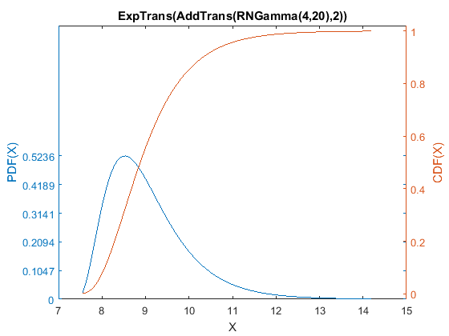
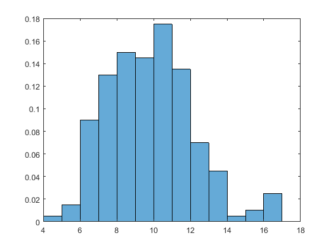

Constructing a complex distribution with a series of transformations.
As an example of how to construct a complex distribution with a series of transformations, this demo shows how to make a Log-Pearson III distribution. According to http://daad.wb.tu-harburg.de/?id=522 , the Pearson III distribution is a shifted gamma with shift c, and the Log-Pearson III is the exponentiate version of that. So, to build this distribution we need the following sequence of steps: # Make a gamma distribution. # Shift the gamma distribution with an additive constant. # Exponentiate the shifted gamma.
Start by making a gamma distribution:
GammaShape = 4; GammaRate = 20; startGamma = RNGamma(GammaShape,GammaRate);
Shift the gamma by adding in a constant. The resulting distribution is a Pearson III distribution:
ShiftConst = 2; PearsonIII = AddTrans(startGamma,ShiftConst);
According to the same site, the Log-Pearson III is a distribution whose log is Pearson III. That means that the Log-Pearson III distribution is an exponential transformation of the original PearsonIII. (Because, taking the log will undo the exponential transform.) So, we can make the desired Log-Pearson III by using the Exp transform:
LogPearsonIII = ExpTrans(PearsonIII);
We are done. The constructed LogPearsonIII is now an example of a Log Pearson III distribution.
Let's see what it looks like (with its current parameters):
LogPearsonIII.PlotDens;
Here are a few of its properties:
LPIIImean = LogPearsonIII.Mean LPIIImedian = LogPearsonIII.Median LPIIIsd = LogPearsonIII.SD
LPIIImean =
9.0718
LPIIImedian =
8.8782
LPIIIsd =
0.95825
If we had some data we could estimate the parameters, so let's make up some fake data to use for that. Normally you would use your own real data.
NDataPoints = 200;
FakeData = RNGamma(7,1).Random(NDataPoints,1) + 3; % Just some arbitrary data.
Now estimate the distribution's parameters (by maximum likelihood) based on the fake data. (This may take a minute):
LogPearsonIII.EstML(FakeData)
Exiting: Maximum number of function evaluations has been exceeded
- increase MaxFunEvals option.
Current function value: 448.811200
ans =
ExpTrans(AddTrans(RNGamma(271122.4542,2181.3684),-122.0326))
Plot the new distribution with the estimated parameters:
LogPearsonIII.PlotDens;

For comparison purposes, make a histogram of the (fake) data:
figure; histogram(FakeData,'normalization','pdf');
Presumably, the distribution with the estimated parameters should match up pretty well with the histogram.